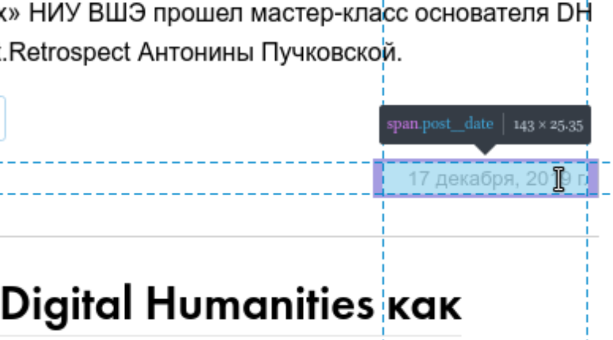

12 Сбор данных из интернета: rvest
Достаточно часто данные не ходят упакованные в готовые файлы .csv или .json. Иногда данные лежат в открытом доступе на какой-нибудь странице в интернете (например, таблицы Левада-центра из предыдущего занятия). А иногда никто и не думал, что что-то станет данными: заголовки и тексты новостей, комментарии, твиты и т. п. В этом разделе мы обсудим основы извлечения данных из вебстраниц.
12.1 Введение
Любая html-документ — это обычный xml файл. Обычно самый верхний узел называется html, который имеет два дочерних узла head и body. Каждый html-документ является инструкцией для браузера, в которой говориться что и в каком порядке нужно отображать, но одновременно эта инструкция является кодом, который мы можем посмотреть. В большинстве браузеров это можно сделать при помощи горячих клавиш Ctrl+U, в Apple Safari — Cmd+Option+U. Кроме того есть режим разработчика, который позволяет делать много всего, в том числе наводить на какой-то объект в браузере и узнавать какой фрагмент кода ему соответствует (этот режим можно вызвать, нажав F12 или Ctrl+Shift+I, в Apple Safari вроде нет горячих клавиш и нужно вызывать как-то из меню). Большинство узлов html-документа состоят из
- тег узла, например,
p - значения узла, например,
Жили-были три медведя. id(уникальные объекты вhtml-документе),class(неуникальные объекты вhtml-документе) и другием атрибуты узла
Например:
<p class="story" some_atribute = 42>Жили-были три медведя.</p>Некоторые html-документ не являются статическими и изменяются после того, как страница была открыта при помощи JavaScript’а. Это динамичность может быть скрытой, когда пользователь лишь видит, как открывается страница, а иногда может быть завязана на некоторые действия пользователя. Информацию со статических страниц собирать достаточно просто и для этого нам хватит пакета rvest. C динамическими сайтами все иногда несколько сложнее. Иногда на диномических страницах можно отследить источник данных, посмотрев вкладку Network в режиме разработчика (ведь откуда-то эти данные появляются в браузере, правда?). Иногда необходимо делать POST и GET запросы, хранить cookies, и т. п. — все это можно сделать при помощи пакета httr, а в самых сложных случаях (когда JavaScript JavaScript погоняет) поможет пакет RSelenium.
12.2 Работа с пакетом rvest
Пакет rvest позволяет скачивать страницы и потом их обрабатывать. Включим библиотеку:
Attaching package: 'rvest'The following object is masked from 'package:purrr':
pluckThe following object is masked from 'package:readr':
guess_encoding12.2.1 Простой случай
В качестве примера рассмотрим сайт Центра цифровых гуманитарных исследований НИУ ВШЭ:
Объект source является списком, который содержит html-страницу. Давайте допустим, что мы хотем скачать все заголовки новостей, т. е. нам нужны значения всех узло h2. Функция html_nodes() позволяет вычленить исключительно узлы с каким-то тегом из всего xml-файла.
{xml_nodeset (10)}
[1] <h2 class="first_child "><a title="Лайфхаки онлайна: оживить лекцию с iP ...
[2] <h2 class="first_child "><a title="Лайфхаки онлайна: антистрессовые тест ...
[3] <h2 class="first_child "><a title="Лайфхаки онлайна: как организовать пр ...
[4] <h2 class="first_child "><a title="Лайфхаки онлайна: вовлекаем студентов ...
[5] <h2 class="first_child "><a title="Цифровые гуманитарии выступили на DH ...
[6] <h2 class="first_child "><a title="Командные DH-проекты: «Instagram Л.Н. ...
[7] <h2 class="first_child "><a title="Цифровые гуманитарии прокачались в ге ...
[8] <h2 class="first_child "><a title="Цифровой архив «Отечественных записок ...
[9] <h2 class="first_child "><a title="Командные DH-проекты: «Отечественные ...
[10] <h2 class="first_child "><a title="Цифровая трансформация культурного на ...Теперь если мы хотим обратиться к значениям этих узлов, мы можем использовать функцию html_text()
[1] "Лайфхаки онлайна: оживить лекцию с iPad и Apple Pencil"
[2] "Лайфхаки онлайна: антистрессовые тесты и Zoom в костюме лемура"
[3] "Лайфхаки онлайна: как организовать проектную работу и не застрять"
[4] "Лайфхаки онлайна: вовлекаем студентов в занятие через Kahoot"
[5] "Цифровые гуманитарии выступили на DH Meetup в Минске"
[6] "Командные DH-проекты: «Instagram Л.Н. Толстого»"
[7] "Цифровые гуманитарии прокачались в геоинформатике"
[8] "Цифровой архив «Отечественных записок» выиграл грант «Инфокультуры»"
[9] "Командные DH-проекты: «Отечественные записки 2.0»"
[10] "Цифровая трансформация культурного наследия: цифровой архив узоров «Орнамика»"Если мы откроем превью узла h2 (команда View()), то мы увидим что-то такое:

Эта схема показывает, что каждый узел h2 содержит узел a который содержит три атрибута: title и href. Вложенность отображается знаком >, а обращаться к атрибутам можно, используя функцию html_attr():
source %>%
html_nodes("h2 > a") %>%
html_attr("title") ->
titles
source %>%
html_nodes("h2 > a") %>%
html_attr("href") ->
links
tibble(titles, links)Как видно из получившейся таблицы, на первой странице сайта всего 10 новостей. А что если мы хотим скачать все новости? Исследовав страницу Центра цифровых гуманитарных исследований, становится понятно, что все новые страницы генерятся по одному и тому же паттерну:
- https://hum.hse.ru/digital/news/page2.html
- https://hum.hse.ru/digital/news/page3.html
- …
- https://hum.hse.ru/digital/news/page6.html
- и даже на первую страницу, на которую мы попали по короткому адресу <hum.hse.ru/digital>, можно также попасть по этому адресу https://hum.hse.ru/digital/news/page1.html
Сгенерим список страниц:
[1] "https://hum.hse.ru/digital/news/page1.html"
[2] "https://hum.hse.ru/digital/news/page2.html"
[3] "https://hum.hse.ru/digital/news/page3.html"
[4] "https://hum.hse.ru/digital/news/page4.html"
[5] "https://hum.hse.ru/digital/news/page5.html"
[6] "https://hum.hse.ru/digital/news/page6.html"А теперь сделаем функцию, которая ходит по страницам и все собирает
map_dfr(str_c("https://hum.hse.ru/digital/news/page", 1:6, ".html"), function(x){
source <- read_html(x)
source %>%
html_nodes("h2 > a") %>%
html_attr("title") ->
titles
source %>%
html_nodes("h2 > a") %>%
html_attr("href") ->
links
tibble(titles, links)
}) ->
df_news
df_newsСоздайте датафрейм, содержащий заголовки и ссылки на новости со страницы Магистерской программы «Цифровые методы в гуманитарных науках».
12.3 Использование атрибута class
Допустим, нас интересует дата создания новости на странице Центра цифровых гуманитарных исследований. Исследовав сайт, легко обнаружить, что информация о дате создания новости хранится в теге span. Однако, если мы попробуем использовать лишь эту информацию, то мы получим много лишнего:
[1] "✖"
[2] "\n\t\t\t\n\t\t\t\n\t\t"
[3] ""
[4] "\n\t\t\t\t\t\t\tvision"
[5] "\n\t\t\t\t\t\t\t\n\t\t\t\t\t\t\t\n\t\t\t\t\t\t\t\t\n\t\t\t\t\t\t\t\t\t\n\t\t\t\t\t\t\t\t\t\t\n\t\t\t\t\t\t\t\t\t\t\t\n\t\t\t\t\t\t\t\t\t\t\t\tНайти\n\t\t\t\t\t\t\t\t\t\t\t\n\t\t\t\t\t\t\t\t\t\t\t\n\t\t\t\t\t\t\t\t\t\t\t\t\n\t\t\t\t\t\t\t\t\t\t\n\t\t\t\t\t\t\t\t\t\n\t\t\t\t\t\t\t\t\t\t\n\t\t\t\t\t\t\t\t\t\tРасширенный поиск по сайту\n\t\t\t\t\t\t\t\t\t\t\n\t\t\t\t\t\t\t\t\t\n\t\t\t\t\t\t\t\t\n\t\t\t\t\t\t\t\n\t\t\t\t\t\t"
[6] ""
[7] "Национальный исследовательский университет «Высшая школа экономики»"
[8] "Учебные подразделения"
[9] "Факультет гуманитарных наук"
[10] "\n\t\t\t\t\t\tЦентр цифровых гуманитарных исследований НИУ ВШЭ\n\t\t\t\t\t"
[11] "Центр цифровых гуманитарных исследований НИУ ВШЭ"
[12] "\n\t\t\t\t\t\tvision"
[13] ""
[14] ""
[15] "Главное"
[16] "Школы по Digital Humanities"
[17] ""
[18] "Приглашенные исследователи"
[19] ""
[20] "Видео" Дело в том, что тег span имеется у многих других объектов на странице. Однако, если присмотреться к значениям, которые мы находим в режиме разработчика, можно заметить следующее:

Если посмотреть код, то мы увидем следующее:
Чтобы обратиться к таким элементам нужно использовать точку:
[1] "\n\t\t\t\t\t\t15 мая\n\t\t\t\t\t"
[2] "\n\t\t\t\t\t\t8 мая\n\t\t\t\t\t"
[3] "\n\t\t\t\t\t\t2 мая\n\t\t\t\t\t"
[4] "\n\t\t\t\t\t\t23 апреля\n\t\t\t\t\t"
[5] "\n\t\t\t\t\t\t1 апреля\n\t\t\t\t\t"
[6] "\n\t\t\t\t\t\t30 марта\n\t\t\t\t\t"
[7] "\n\t\t\t\t\t\t23 марта\n\t\t\t\t\t"
[8] "\n\t\t\t\t\t\t10 марта\n\t\t\t\t\t"
[9] "\n\t\t\t\t\t\t2 марта\n\t\t\t\t\t"
[10] "\n\t\t\t\t\t\t28 февраля\n\t\t\t\t\t"Почистим:
[1] "15 мая" "8 мая" "2 мая" "23 апреля" "1 апреля"
[6] "30 марта" "23 марта" "10 марта" "2 марта" "28 февраля"Постройте график, показывающий количество новостей Центра цифровых гуманитарных исследований за каждый месяц.
12.3.1 Чтение таблиц
Таблицы, которые хранятся на html-странице можно считывать как таблицы (а, не например, построчно). Рассмотрим вкладку “Число студентов и вакантные места” на сайте Магистерской программы «Цифровые методы в гуманитарных науках»:
source <- read_html("https://www.hse.ru/ma/dh/vacant")
source %>%
html_node("table") %>%
html_table()Функция html_node() возвращает первую таблицу на странице. В предыдущих разделах мы использовали функцию html_nodes(), которая вытаскивает все узлы с соответствующими атрибутами:
List of 3
$ :'data.frame': 4 obs. of 2 variables:
..$ X1: chr [1:4] "Общий контингент студентов" "из них на местах, финансируемых за счет субсидий из федерального бюджета на выполнение государственного задания" "из них на местах по договорам об оказании платных образовательных услуг" "из них на местах, финансируемых в рамках межправительственных соглашений"
..$ X2: int [1:4] 21 18 3 0
$ :'data.frame': 2 obs. of 2 variables:
..$ X1: chr [1:2] "1 курс" "2 курс"
..$ X2: int [1:2] 0 NA
$ :'data.frame': 3 obs. of 3 variables:
..$ X1: chr [1:3] "" "1 курс" "2 курс"
..$ X2: chr [1:3] "места, финансируемые за счет субсидий из федерального бюджета на выполнение государственного задания" "0" ""
..$ X3: chr [1:3] "места по договорам об оказании платных образовательных услуг" "0" ""Получился список (объект типа list), в котором содержаться все таблицы со страницы. Так что, для того, чтобы работать с конкретной таблицей нужно использовать индексацию списков:
12.3.2 Некоторые советы
Некоторые ресурсы блокируют возможность скачивать из них данные. Обычно это делается на уровне сервера, который видит, что с какого-то IP приходит по 5 запросов в секунду и ограничивает доступ, на случай если вы начинаете DDoS атаку. Если сервер не отдает вам данные или отдает, но раз в какой-то временной промежуток, следует прописать в вашей программе ожидание (команда Sys.sleep()). Некоторые сайты, например, Википедия, специально архивирует данные, чтобы люди не пытались ее обкачать: вот страница, на которой это подробно описано.
Вот cheatsheet по теории вероятности.